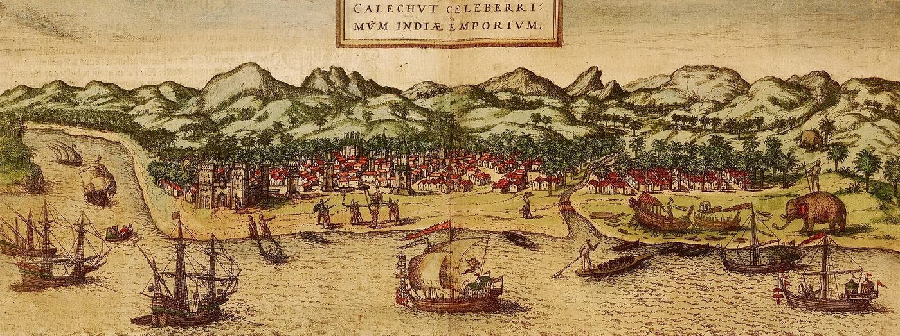
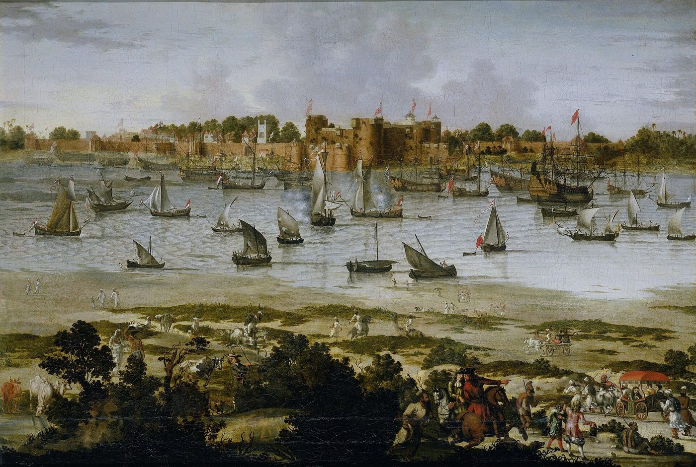
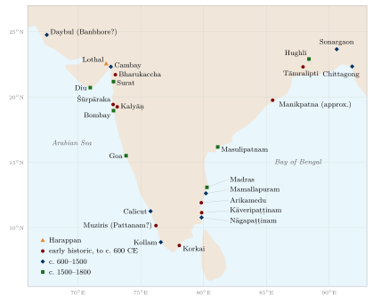

Chapter 15: Port Cities, Port Administration and the Law of the Sea¶
Chapter Overview
This chapter surveys the principal ports of the subcontinent in chronological order, from Bharukaccha and the Indo-Roman ports through the medieval emporia and the ports of the Bengal sultanate to Surat, Masulipatnam and Hughli in the Mughal period, and asks how ports were governed: by the Arthaśāstra’s superintendent of boats, by Tamil and Chola customs officers, by the shāhbandar of the Indian Ocean emporia and by Mughal port officials. It then sets out what the legal sources actually say about ships, ferries, sea loans, shipwreck and piracy. No Sanskrit code of maritime law exists; the relevant rules are scattered, brief and mostly concerned with revenue, interest and the liability of boatmen, and much of the law that governed sea trade in practice was the law of merchants’ own communities.
15.1 Ports and Their Settings¶
Few South Asian ports had natural deep-water harbours. Most stood on river estuaries (Bharuch on the Narmada, Surat on the Tapti, Tāmralipti and Hughli on the distributaries of the Ganga), on lagoons and backwaters (Arikamedu, Kollam, Cochin), or on open beaches and roadsteads where ships anchored offshore and goods were landed by boat (Calicut and Masulipatnam). Estuarine ports had to contend with tides, shoals and silting; open roadsteads closed when the south-west monsoon made the west coast dangerous between about June and August. Rivers changed course and gulfs silted, and so the leading port of a region shifted over time: Bharukaccha gave way to Cambay and Cambay to Surat, while Tāmralipti gave way to Saptagrāma (Satgaon) and Saptagrāma to Hughli. A port’s fortune depended as much on its hinterland, the roads and rivers that brought cotton, pepper or grain to the coast, as on its anchorage (Chapter 10).
Sanskrit texts and inscriptions use several words for a port or trading town. Paṭṭana (Tamil paṭṭiṉam) is a trading town, often on the coast; velākula, literally “shore”, is used for ports in inscriptions of western India; Persian and Arabic sources use bandar. None of these words implies a particular kind of installation (Chakravarti 2002).
The earliest site often called a port is Lothal in Gujarat, a Harappan craft and trading town whose brick basin may or may not have been a dock (Section 11.3).
15.2 Ports of the Early Historic Period¶
The Periplus Maris Erythraei (mid-1st c. CE) names many ports of the west coast and some of the east, and Tamil poetry, Buddhist narrative, inscriptions and archaeology add to its picture. The trade that passed through these ports is discussed in Chapter 11; here the emphasis is on the ports themselves.
15.2.1 Bharukaccha (Barygaza)¶
Bharukaccha (Prakrit Bharukaccha, Greek Barygaza, modern Bharuch) stood on the north bank of the Narmada, upstream from its estuary. The Periplus gives it more space than any other Indian port (§§41–49), describing its dangerous approach, the royal pilot boats that guided ships up the river (Section 14.6) and the goods it imported and exported, which included slave musicians and young women for the king (Section 11.7) (Casson 1989). Bharukaccha drew on a large hinterland reaching to Ujjayinī and the Deccan towns of Paiṭhan and Ter. It remained a port into the medieval period, when Arabic geographers knew it as Barūṣ, but from about the tenth century it was overshadowed by Cambay. Buddhist narrative remembers it as the home port of the blind pilot of the Suppāraka Jātaka (Section 11.5).
15.2.2 Śūrpāraka (Sopārā) and Kalyāṇ¶
Śūrpāraka (Pali Suppāraka, Greek Souppara, modern Nala Sopara) lies on the coast of the northern Konkan, in Palghar district of Maharashtra, north of Mumbai. A fragment of Aśoka’s Rock Edicts (part of the eighth edict) was found there, and in 1882 Bhagvanlal Indraji excavated a Buddhist stūpa that contained a relic deposit with a silver coin of the Sātavāhana king Yajña Śrī Sātakarṇi. In Buddhist tradition Śūrpāraka is the home of Pūrṇa, a merchant who made sea voyages before becoming a monk (the Pūrṇāvadāna of the Divyāvadāna). The Periplus lists Souppara among the local markets south of Barygaza (§52) (Ray 1986, 2003).
Kalyāṇ (Greek Kalliena), on the Ulhas creek inland from Mumbai, was a port of the Sātavāhana period. The Periplus (§52) says that it had been a lawful port of trade under an earlier king, but that since it had passed into the hands of a ruler called Sandanes its trade was obstructed, and Greek ships that put in there were sent under guard to Barygaza (Casson 1989). The passage shows a ruler directing foreign trade to a particular port, presumably to control it and tax it. Inscriptions in the Buddhist caves of Kanheri, close to both Sopārā and Kalyāṇ, record gifts by merchants and residents of Kalyāṇ (Ray 1986). In the sixth century the Alexandrian merchant Cosmas Indicopleustes still knew Kalliana as a market with a Christian bishop appointed from Persia.
15.2.3 Muziris (Muciṟi)¶
Muziris (Tamil Muciṟi) was the chief pepper port of the Cēra kings on the Malabar coast. The Periplus places it on a river some distance from the sea and says it was full of ships from Arabia and from Roman Egypt (§§53–56) (Casson 1989). Its exact location is not known. It is traditionally placed near Kodungallur, at the old mouth of the Periyar, and the excavators of Pattanam, a few kilometres to the south, identify that site as part of Muziris, a plausible but unproved identification. The Tamil poems, the Pattanam finds and the Muziris papyrus are discussed in Section 11.7.
15.2.4 Arikamedu¶
Arikamedu, on a lagoon just south of Puducherry and usually identified with the Periplus’s Poduke, is the best-excavated early port of the east coast. Once taken for a Roman trading station, it is now known to have been an Indian settlement older than Roman contact, with its own bead and pottery industries, in which Mediterranean imports were one element among many (Section 11.7) (Begley and De Puma 1991).
15.2.5 Kāveripaṭṭinam (Pūmpuhār)¶
Kāveripaṭṭinam, also called Pukār or Pūmpuhār, at the mouth of the Kaveri, was the port of the early Chola kings. Two Tamil works describe it at length. The Paṭṭiṉappālai, one of the Ten Idylls (Pattuppāṭṭu) of the Caṅkam corpus, praises the city of the Chola king Karikāl. It describes goods arriving from many directions: horses by sea, pepper by land, gems and gold from the northern mountains, sandalwood from the western hills, pearls from the southern sea and coral from the eastern, the produce of the Ganga and the Kaveri, food from Īḻam (Sri Lanka) and goods from Kāḻakam (probably Kedah). It also describes customs officers who stamped the tiger emblem of the Cholas on goods once the duty had been paid, and piled the goods in open yards (Champakalakshmi 1996).
The Cilappatikāram, a Tamil narrative poem of the post-Caṅkam period (probably 5th–6th c. CE), opens in Pukār. It describes the city as divided into a quarter by the sea, Maruvūrppākkam, where the houses of Yavana and other foreign merchants stood near the warehouses and the shops of artisans, and an inland quarter, Paṭṭiṉappākkam, of the king, the nobles and the great merchants. The heroine’s father bears the title Mānāykaṉ, “great captain”, which marks him as a shipowning merchant. Both poems are idealising works and their numbers and splendours cannot be taken literally, but they show how a Tamil port was imagined: a city of two halves, foreign and native, organised around the exchange of goods (Champakalakshmi 1996). The Maṇimēkalai tells that Pukār was swallowed by the sea, a legend that may preserve a memory of coastal erosion.
Excavations since the 1960s at Kāveripaṭṭinam and nearby villages have found brick structures interpreted as a wharf, a Buddhist monastery and other remains, and underwater surveys offshore have reported submerged structures whose date and function are still uncertain (Ray 2003).
15.2.6 Tāmralipti¶
Tāmralipti (modern Tamluk in Purba Medinipur district, West Bengal), on the Rupnarayan near its junction with the Hugli estuary, was the main port of the lower Ganga region from the late centuries BCE to the end of the first millennium CE. It linked the river trade of the Gangetic plain to Sri Lanka, Southeast Asia and China. The Chinese pilgrim Faxian stayed there for two years in the early fifth century, copying scriptures and images, before sailing on a merchant ship to Sri Lanka; Xuanzang described it in the seventh century as a port near the sea with Buddhist monasteries; and Yijing landed there in 673 and studied Sanskrit at a monastery in the town before going on to Nālandā (Ray 1994; Sen 2003). As the river silted, trade moved to Saptagrāma (Satgaon), and in the sixteenth century to Hughli.
15.2.7 The Kaliṅga and Andhra Coasts¶
Between Tāmralipti and the Tamil country lay the coasts of Kaliṅga, roughly modern Odisha, and Andhra. They linked the Ganga delta with the south and faced Southeast Asia across the Bay of Bengal. Their place in that trade left a trace in language: in Malay and neighbouring languages, people from India, especially from the south, came to be called Keling, a word generally derived from Kaliṅga.
Ptolemy’s Geography (7.1) names a place called Paloura on this coast and, near it, a “point of departure” (aphetērion) for ships sailing to Chrysē, which suggests that vessels bound across the Bay set out from here; Paloura is often identified with Palur in Ganjam district, though the identification is not certain. The fortified town of Sisupalgarh near Bhubaneswar, excavated by B. B. Lal in 1948, yielded Rouletted Ware of the kind found at Arikamedu and around the Bay, and at Manikpatna on the Chilika lagoon finds of Rouletted Ware and, from later contexts, Chinese and West Asian glazed ceramics have been reported; no full excavation report has been published, but the finds suggest a harbour used over many centuries (Ray 2003). On the Andhra coast the deltas of the Kṛṣṇā and Godāvarī supported Buddhist centres such as Amarāvatī, Nāgārjunakoṇḍa and Śālihuṇḍam, whose inscriptions record merchant donors (Section 11.10). Ghaṇṭaśālā near the mouth of the Kṛṣṇā is often identified with Ptolemy’s Kontakossyla and with the Kaṇṭakasela named in an inscription at Nāgārjunakoṇḍa, and the lead ship coins attributed to Yajña Śrī Sātakarṇi come mainly from this coast (Section 13.2) (Ray 1986; Chakravarti 2002). In later centuries Motupalli (Section 15.6.4) and Masulipatnam carried the Andhra coast’s trade.
In Odisha the memory of seafaring survives in festival. Bali Jātrā, held at Cuttack on Kārttika Pūrṇimā, and the household rite of floating small boats on the same day (boita bandāṇa) are popularly understood to commemorate the voyages of Kaliṅga merchants (sādhaba) to Bali, Java and Sumatra. These are living traditions. The voyages they recall are real in general terms, but the particular memories attached to them cannot be dated, and talk of Kaliṅga “colonies” overseas belongs to the “Greater India” writing discussed in Chapter 16.
15.3 Ports of the Early Medieval and Medieval Periods¶
15.3.1 Mamallapuram¶
Mamallapuram (Mahabalipuram), south of Chennai, takes its name from the Pallava king Narasiṃhavarman I Māmalla (r. c. 630–668). Its rock-cut shrines, monolithic rathas and great relief are among the masterpieces of early South Indian art, and the structural Shore Temple was built under Narasiṃhavarman II Rājasiṃha (c. 700). Mamallapuram was a Pallava port, but direct archaeological evidence of its harbour is slight, and its commercial importance is usually inferred from its setting and from the Pallava kingdom’s contacts with Sri Lanka and Southeast Asia. The architecture is treated in Volume 16, Vāstu–Śilpa; the links with Southeast Asia are discussed in Chapter 16 (Nilakanta Sastri 1955).
15.3.2 Nāgapaṭṭinam¶
Nāgapaṭṭinam, south of the Kaveri delta, was the principal port of the imperial Cholas, where a Śailendra king of Śrīvijaya built a Buddhist monastery endowed by Rājarāja I and Rājendra I (Section 12.9.2) (Kulke et al. 2009). Large numbers of Buddhist bronzes have since been found in the town, and a brick tower known to Europeans as the “China pagoda” stood there until it was demolished in 1867. The port continued after the Cholas, became a Portuguese settlement in the sixteenth century and was taken by the Dutch in 1658. The Chola expeditions launched from the Coromandel coast are discussed in Chapter 12.
15.3.3 Kollam (Quilon)¶
Kollam, on the backwaters of southern Kerala, was prominent from the ninth century; the Kollam era, still used in Kerala, begins in 825 CE. The Tarisāppaḷḷi copper plates of 849, issued there, record privileges granted to a Christian church under the protection of two merchant bodies (Section 4.7). The ninth-century Arabic account of the route to China names Kūlam Malī as the port where ships from the Gulf took on water before crossing the Bay of Bengal, and Chinese writers of the Song period describe it as a place where large ships transferred cargo. Marco Polo describes it, and Ibn Baṭṭūṭa visited it (Ibn Baṭṭūṭa 1958; Polo 1903). In the later middle ages it was eclipsed by Calicut and then by Cochin.
15.3.4 Calicut¶
Calicut (Kozhikode) became the leading port of Malabar in the thirteenth and fourteenth centuries under the rulers known as the Sāmūtiri (Zamorin). It had no sheltered harbour (Figure 15.1): ships anchored in the open roadstead and goods were landed by boat, and the port was all but closed during the south-west monsoon. Its success rested on the security it offered to merchants of every origin and on its access to the pepper of the interior (Prange 2018).


Ibn Baṭṭūṭa, who was in Calicut several times in the 1340s, calls it one of the great ports of Malabar, visited by merchants from China, Java, Sri Lanka, the Maldives, Yemen and Fārs. He names the shāhbandar, the official in charge of the port and its foreign merchants, as a merchant from Bahrain, describes the Muslim community with its own judge (qāḍī) under a Hindu ruler, and saw Chinese junks in the roadstead waiting for the season (Ibn Baṭṭūṭa 1958). Ma Huan, the Muslim interpreter on Zheng He’s voyages, describes Calicut in the early fifteenth century as the great country of the western ocean, ruled by a Hindu king who employed Muslim officials. He describes how, when the Chinese ships arrived, the king’s officials, a Muslim chief and the local brokers met the Chinese commanders to agree the prices of the goods; the bargain was sealed by clasping hands, and after that it could not be changed (Ma 1970). The office of shāhbandar was later held by the leading Muslim merchant of the town, known locally as the Shāhbandar Koya.
After Vasco da Gama’s arrival in 1498, the Zamorins’ refusal to exclude the Muslim merchants of the port led to long conflict with the Portuguese (Chapter 18).
15.3.5 Cambay¶
Cambay (Khambhāt), at the head of the gulf of the same name, was the chief port of Gujarat from about the tenth to the sixteenth century, and its merchants were found from Aden to Melaka (Chapter 12). Silting and dangerous shoals made it increasingly difficult for large ships, and Portuguese control of Diu (from 1535) and of the sea lanes reduced its independence; by the late sixteenth century Surat had begun to take its place (Pearson 1976).
15.3.6 Chittagong, Sonargaon and Satgaon: Bengal under the Sultans¶
At the head of the Bay, Bengal was ruled by independent sultans from the mid-fourteenth century, when Ilyās Shāh united the province in the 1350s, until the Afghan and Mughal conquests of the sixteenth (Eaton 1993). Three ports served it: Chittagong on the Karnaphuli, close to the open sea in the east; Sonargaon, the old eastern capital near modern Dhaka, reached by river; and Satgaon (Saptagrāma) on the Hugli in the west, the successor of Tāmralipti. Ibn Baṭṭūṭa landed in 1346 at a port he calls Sudkāwān, usually identified with Chittagong, and later sailed from Sonargaon for Southeast Asia; he remarks on the abundance and cheapness of Bengal’s rice (Ibn Baṭṭūṭa 1958).
In the early fifteenth century Bengal entered Ming diplomacy. Its sultans sent missions to the Yongle emperor, among them one of 1414 that brought a giraffe, which had itself come from the African coast and was greeted at the Chinese court as an auspicious creature, and squadrons of Zheng He’s fleets and Ming envoys called at Chittagong (Dreyer 2007). Ma Huan describes how ships arriving at Chittagong sent their goods up river by smaller boats to Sonargaon and the capital, and he notes that the kingdom used a silver coin, the tanka, with cowries for small purchases, and produced many kinds of fine cotton cloth (Ma 1970). Bengal’s rice, sugar, cotton cloth and silk went to Southeast Asia and the west coast: writing at Melaka soon after 1511, Tomé Pires counted Bengali merchants among the traders of the city (Pires 1944). Portuguese private traders settled at Chittagong and at Satgaon, which they called the great and the little port, from the 1530s; as the river at Satgaon silted, its trade passed to Hughli.
15.4 Ports of the Early Modern Period¶
15.4.1 Surat¶
Surat, on the Tapti upstream from its mouth (large ships anchored at Swally, Suvālī, in the estuary), came under Mughal rule when Akbar conquered Gujarat in 1572–73. In the seventeenth century it was the main port of the Mughal empire and one of the busiest in Asia (Figure 15.2). Its ships sailed to the Red Sea, the Gulf, the Malabar coast and Southeast Asia, and it was the principal port of embarkation for pilgrims to Mecca. The port was governed by a Mughal official, the mutasaddī, with a customs house and a separate commander of the fort. Its merchants included Hindu and Jain vāṇiyās such as the great financier Vīrjī Vorā, Muslim shipowners such as Mullā ʿAbd al-Ghafūr, Bohras, Armenians and Parsis, and from the second decade of the seventeenth century the English and Dutch companies maintained factories there. The Maratha raids of 1664 and 1670 under Śivājī showed the city’s vulnerability. Das Gupta (1979) has shown how Surat’s trade declined in the first half of the eighteenth century, as the Mughal, Safavid and Ottoman markets on which it depended were disrupted, its shipowners lost their ships and their capital, and Indian merchants increasingly moved under the protection of the English at Bombay (Subramanian 1996).


15.4.2 Masulipatnam¶
Masulipatnam (Machilipatnam), on the Krishna delta, was the port of the Qutb Shāhī sultanate of Golconda in the sixteenth and seventeenth centuries. Its ships sailed to Pegu, Arakan, Tenasserim and Aceh in the east and to the Gulf in the west. Persian merchants and officials, some of them great shipowners, were prominent in its trade alongside Telugu merchant groups such as the Komaṭis (a trading caste, not weavers) and Balijas. The Dutch established a factory there in 1606 and the English in 1611, and both bought the painted and printed cottons of the hinterland, which were in demand in Southeast Asia and later in Europe (Arasaratnam 1986; Subrahmanyam 1990). The companies depended on Indian merchants and brokers to advance money to weavers and to deliver cloth, a system Arasaratnam (1994) and others have analysed in detail.
15.4.3 Hughli¶
Hughli, on the river of the same name above modern Kolkata, began as a Portuguese settlement in about 1579–80, with Mughal permission. In 1632 a Mughal army took the town and expelled the Portuguese, and Hughli became the main Mughal port of Bengal and the seat of a faujdār. The Dutch at Chinsurah, the English at Hughli and later at Calcutta (from 1690), the French at Chandernagore and the Danes at Serampore all settled along the same stretch of river to buy the silk, cotton cloth, saltpetre and sugar of Bengal (Prakash 1985; Chaudhuri 1978). The rise of Calcutta in the eighteenth century belongs to Chapters 18 and 19. Table 15.1 summarises the principal ports discussed in this chapter, and Figure 15.3 shows where they lay.

| Port | Location | Main period | Principal evidence |
|---|---|---|---|
| Bharukaccha (Bharuch) | Narmada estuary, Gujarat | c. 2nd c. BCE–10th c. CE | Periplus; Jātakas; Arabic geographers |
| Śūrpāraka (Sopārā) | Northern Konkan, Maharashtra | c. 3rd c. BCE–6th c. CE | Aśokan edict fragment; stūpa; Periplus; Buddhist narrative |
| Kalyāṇ | Ulhas creek, Maharashtra | c. 1st c. BCE–6th c. CE | Periplus; Kanheri inscriptions; Cosmas |
| Muziris (Muciṟi) | Periyar mouth, Kerala (site debated) | c. 1st c. BCE–3rd c. CE | Periplus; Tamil poetry; Muziris papyrus; Pattanam (?) |
| Arikamedu | Near Puducherry | c. 2nd c. BCE–early centuries CE | Excavations 1945–1992 |
| Kāveripaṭṭinam | Kaveri mouth, Tamil Nadu | early centuries CE | Paṭṭiṉappālai; Cilappatikāram; excavation |
| Tāmralipti (Tamluk) | Rupnarayan, West Bengal | c. 3rd c. BCE–8th c. CE | Chinese pilgrims; excavation |
| Kaliṅga coast (Paloura, Manikpatna) | Odisha | early centuries CE and later | Ptolemy; excavation |
| Mamallapuram | Coromandel coast | 7th–8th c. CE | Pallava monuments |
| Nāgapaṭṭinam | Coromandel coast | 9th–13th c. CE and later | Leiden plates; Buddhist bronzes |
| Kollam (Quilon) | Southern Kerala | 9th–15th c. CE | Tarisāppaḷḷi plates; Arabic, Chinese and European accounts |
| Calicut (Kozhikode) | Malabar | 13th–16th c. CE | Ibn Baṭṭūṭa; Ma Huan; Portuguese sources |
| Cambay (Khambhāt) | Gujarat | 10th–16th c. CE | Arabic sources; Pires; Gujarati merchants abroad |
| Chittagong, Sonargaon, Satgaon | Bengal | 14th–16th c. CE and later | Ibn Baṭṭūṭa; Ma Huan; Portuguese sources |
| Surat | Tapti, Gujarat | late 16th–18th c. CE | Mughal, Dutch and English records |
| Masulipatnam | Krishna delta, Andhra | 16th–17th c. CE | Dutch and English records |
| Hughli | Hugli river, Bengal | late 16th–18th c. CE | Mughal and company records |
15.5 Port Administration¶
15.5.1 The Arthaśāstra’s Superintendent of Boats¶
The Arthaśāstra (Chapter 2) devotes one short chapter (AŚ 2.28) to the nāvadhyakṣa, the superintendent of boats or of shipping. Read in Olivelle’s and Kangle’s translations, it is a revenue and security chapter, not a law code (Olivelle 2013; Kangle 1960). Its main provisions can be paraphrased as follows:
-
The superintendent keeps the accounts of voyages on the sea and at river mouths, and of ferries on lakes, reservoirs and rivers near the royal fortified towns.
-
Villages on the coast and on the banks of rivers and lakes pay a fixed tax; fishermen give a sixth of their catch as boat hire; merchants pay the share of duty customary in port towns; passengers on the king’s boats pay a fare; and those who fish for conch and pearl pay boat hire or use their own boats.
-
He is to observe the established customs of port towns. A ship that arrives damaged by storm is to be treated with fatherly kindness, and goods damaged by water may be exempted from duty or charged half.
-
Pirate ships (hiṃsrikā) are to be destroyed, as are ships bound for enemy territory and those that violate the customs of the port.
-
On large rivers the king’s boats are to carry a commander, a steersman, men to handle the ropes and a bailer. People may cross only at the official ferries and at the proper times; a schedule of fares, graded by load and by the size of the river, is given, and certain persons (among them brāhmaṇas, renunciants, children, the aged, the sick, royal messengers and pregnant women) cross free.
-
If a boat is lost through the fault of the ferry service, for example through lack of crew or equipment or failure to repair it, the superintendent must make good the loss.
The customs house and the customs duties on imported goods, which are treated in a separate pair of chapters (AŚ 2.21–22), are discussed in Chapter 7; they apply to goods entering the capital by any route, not specifically by sea. Like the rest of the Arthaśāstra, these provisions describe an ideal kingdom; we do not know that any state applied them.
15.5.2 Tamil and Chola Ports¶
The Paṭṭiṉappālai’s officers stamping the tiger seal on goods at Pukār are the earliest description of customs collection at a Tamil port (Section 15.2.5). Chola inscriptions speak of tolls and customs (suṅkam) and of merchant bodies with privileges in particular towns, and Kulottuṅga I (r. 1070–1122) bore the title “the Chola who abolished tolls”, which probably refers to the remission of certain transit dues rather than to free trade in any modern sense (Hall 1980). Much of the day-to-day regulation of merchants was left to their own associations, discussed in Chapter 4.
15.5.3 The Shāhbandar and the Emporia of the Ocean¶
From the later medieval period many ports of the Indian Ocean had an official called the shāhbandar (Persian, “king of the port”). He received foreign ships, assigned warehouses, assessed duties, and represented the merchants of his community before the ruler. Ibn Baṭṭūṭa met one at Calicut. Tomé Pires, writing just after the Portuguese conquest of Melaka in 1511, describes four shāhbandars there, each responsible for a group of nations: one for the Gujaratis alone; one for the merchants of the Coromandel coast, Bengal, Pegu and Pasai; one for those of Java, the Moluccas and the nearer islands; and one for the Chinese and the people of the Ryukyus and Champa. He reports that merchants from the west paid a duty of six per cent of the value of their cargoes, while those from the east gave presents instead (Pires 1944). The arrangement shows how a port could govern a cosmopolitan population by community, with each group represented by its own officer.
15.5.4 Mughal Ports¶
At Surat the mutasaddī was responsible for the port, the customs house and the city, while a separate commander held the fort. Customs were levied on the value of goods. In 1665 Aurangzeb fixed the rate at two and a half per cent for Muslim merchants and five per cent for Hindus; two years later he abolished duties for Muslims altogether, an exemption that was later withdrawn (Richards 1993). Merchants complained frequently of the exactions of particular governors, and Das Gupta’s study of Surat shows how much the fortunes of the port depended on the relations between its merchants and the officials sent from the court (Das Gupta 1979).
15.6 The Law of the Sea: What the Sources Say¶
There is no Sanskrit treatise or chapter on maritime law. The Yuktikalpataru, a late compilation of uncertain date, classifies ships but contains no law (Chapter 13). What the texts offer is a small number of scattered rules, set out below.
15.6.1 Ferries, Boats and the Liability of Boatmen¶
Besides the Arthaśāstra’s chapter on the superintendent of boats, the main passage is near the end of the eighth chapter of the Manusmṛti (c. 2nd c. CE) (Olivelle 2004). Manu 8.404–409 sets ferry fares: a cart pays one paṇa, a man with a load half a paṇa, an animal or a woman a quarter, and a man without a load an eighth. Carts carrying goods pay according to the value of the goods, and empty vessels and people without property pay a small amount. On long journeys by water the fare is to be fixed according to place and time; this, the text says, applies to rivers, for on the sea there is no fixed standard. Pregnant women, ascetics, hermits and brāhmaṇa students are not to be charged. If anything is damaged in a boat through the fault of the boatmen, the boatmen are to make it good together, each paying his share; for damage caused by fate (daiva) there is no penalty. This last rule is a genuine distinction between loss by negligence and loss by accident, but it concerns ferry boats on rivers and is very brief.
15.6.2 Sea Loans and Interest¶
The Arthaśāstra (AŚ 3.11.1) and the Yājñavalkyasmṛti (c. 4th–5th c. CE; 2.38) both allow monthly interest of twenty per cent for those who trade by sea, against ten for those who travel through wild country. Manu (8.156–157) treats contracts tied to a journey: a party who has agreed to a return for carriage over a stated distance and time and fails to keep to them loses the agreed return, and for sea voyages the rate fixed by men expert in sea voyages, who know place, time and goods, is to be accepted (Olivelle 2004; Kane 1930). These rules recognise that sea trade was risky and that its terms were set by merchant custom, but they do not say whether the lender lost his claim if the ship was lost, the defining feature of the Greek and Roman maritime loan. The rates are discussed in Chapter 6; the only surviving loan document connected with the India trade, the Muziris papyrus, is Greek (Chapter 11).
15.6.3 Partnership and Shared Loss¶
The dharmaśāstra title on partnership (saṃbhūya-samutthāna) rules that partners share profit and loss in proportion to their contributions or as they have agreed, and Yājñavalkya and Nārada (c. 5th–6th c. CE) add that a partner who saves the common goods from a calamity caused by fate, by the king or by thieves is entitled to a tenth of what he saves (Kane 1930). These rules apply to any joint enterprise, by land or by sea. Nārada treats debt, deposits, partnership and wages in detail but has no title on sea trade. Table 15.2 summarises the relevant rules.
| Passage | Content |
|---|---|
| AŚ 2.28 | Superintendent of boats: revenue from boats, fishermen and ports; storm-damaged ships and goods; destruction of pirate ships; ferries, fares and exemptions; liability for boats lost through the service’s fault |
| AŚ 3.11.1 | Monthly interest of 20 per cent for sea traders |
| Manu 8.156–157 | Contracts tied to a journey; rate for sea voyages to be fixed by experts |
| Manu 8.404–409 | Ferry fares; no fixed fare on the sea; exemptions; boatmen jointly liable for damage through their fault, not for damage by fate |
| Yājñavalkya 2.38 | Monthly interest of 20 per cent for sea traders |
| Yājñavalkya, Nārada (partnership) | Profit and loss shared by contribution; a tenth to a partner who saves the common goods |
Debate: Did Indian law know “general average”?
General average is the rule that when cargo is thrown overboard to save a ship, the loss is shared by all whose goods were saved. No passage on jettison has been found in the Arthaśāstra or the smṛtis surveyed here. The partnership rule on proportional sharing of loss is a different principle: it applies to partners in a single enterprise, not to unrelated shippers on one vessel. The question whether Indian merchants followed a custom of contribution for jettison is open; the law books do not tell us.
15.6.4 Shipwreck and the Right of Wreck¶
In many parts of the world rulers claimed wrecked ships and their cargoes. Marco Polo reports that in the kingdom of Eli, on the Malabar coast north of Calicut, a ship that entered the river mouth by accident, instead of by intention, was seized with all its goods (Polo 1903). The Persian envoy ʿAbd al-Razzāq, who was at Calicut in 1442–43, contrasts the practice of other ports, where a ship driven in by the wind was plundered, with that of Calicut, where every ship, whatever its origin or destination, was treated like any other (Major 1857). The clearest Indian legal document on the subject is the inscription set up at Motupalli on the Andhra coast in 1244–45 by the Kākatīya king Gaṇapatideva. It declares that former kings had seized the entire cargo of ships wrecked by storms and driven ashore, and that he, for the sake of merchants who brave the sea, renounces this right and will take only the fixed duty (Chakravarti 2002). Gaṇapatideva’s promise was an invitation to merchants: a port that guaranteed their goods could hope to attract their trade.
15.7 Merchants’ Law: Associations, Communities and Islamic Law¶
Much of the law that governed sea trade in practice was not royal law at all. The dharmaśāstras themselves tell the king to respect the customs (dharma) of regions, castes, guilds and associations of merchants. In south India the merchant bodies known as the Five Hundred (Ayyāvoḷe), the Maṇigrāmam and the Añjuvaṇṇam held privileges from kings, settled disputes among their members and appear in inscriptions from Sri Lanka to Sumatra, the Kollam plates of 849 being the classic example (Section 4.7) (Abraham 1988; Malekandathil 2010).
Muslim merchants, who dominated much of the trade of the western ocean from the ninth century, lived by Islamic law and settled their disputes before their own qāḍīs, even in ports ruled by Hindu kings. In Malabar the Muslim communities, mostly of the Shāfiʿī school, had Friday mosques endowed by merchants and protected by the rulers, and their legal and religious scholars were linked to Yemen, the Hijaz and Egypt (Prange 2018). The letters of the Cairo Geniza show Jewish merchants trading between Egypt, Aden and Malabar in the eleventh and twelfth centuries through partnerships, commenda-type investments and informal relations of mutual service, and resolving disputes before rabbinical courts or merchant representatives (Goitein and Friedman 2008); Aden, the entrepôt between India and Egypt, had a customs regime that recalls what Ibn Baṭṭūṭa and Pires describe in India and Melaka (Margariti 2007). The Indian Ocean was thus a space of plural law, in which each community kept its own law for its internal affairs while rulers and port officials regulated duties, security and the treatment of strangers.
15.8 Comparisons: Rhodian Sea Law and the Maritime Laws of Melaka¶
The Mediterranean had a longer tradition of written maritime law. The Roman jurists preserved, in a title of Justinian’s Digest (533 CE) on the “Rhodian law of jettison” (Digest 14.2), the rule that cargo thrown overboard to lighten a ship in danger is to be made good by the contribution of all who benefited. A separate Byzantine compilation, the Rhodian Sea Law (Nomos Rhodiōn Nautikos), probably of the seventh or eighth century, sets out rules on the shares of shipowners, merchants and crew, on loans, jettison and wreck (Ashburner 1909).
A closer parallel in the Indian Ocean is the Undang-Undang Laut Melaka, the Maritime Laws of Melaka, compiled in the fifteenth century, by tradition from the customs of ship captains (nakhoda), and presented to the sultan. It describes the captain as a ruler at sea, sets out the duties and ranks of the crew, the position of merchants travelling on board, the allotment of cargo space, discipline and punishments, and procedure in danger, combining Malay custom (adat) with Islamic law (Winstedt and Josselin de Jong 1956). Gujarati and Tamil merchants traded at Melaka and would have sailed under such rules. Nothing comparable survives from an Indian port, which does not mean that Indian captains and merchants had no customs, only that they were not written down or have not survived.
15.9 Piracy¶
Piracy is a constant in the sources. The Arthaśāstra orders the destruction of pirate ships (Section 15.5.1). The Periplus mentions islands south of Kalliena inhabited by pirates (§53) (Casson 1989), and Pliny the Elder writes that ships sailing to India carried companies of archers because of pirates (Natural History 6.101), and that Muziris was not a desirable place to call because pirates occupied a place nearby (6.104). Marco Polo describes pirate fleets from Gujarat and Malabar that cruised in line abreast to catch merchant ships in the sailing season (Polo 1903).
“Pirate” was also a political label. The Portuguese called the fleets of the Kuñjāli Marakkārs, hereditary Muslim admirals of the Zamorin who fought them for most of the sixteenth century, pirates; the last Kuñjāli was executed by the Portuguese at Goa in 1600 (Malekandathil 2010). The English applied the same word to Kānhojī Āṅgre, admiral of the Maratha fleet in the early eighteenth century, who taxed and seized shipping off the Konkan as the Portuguese and the English themselves did (Apte 1973). European pirates were in turn a danger to Indian shipping, as the capture of the Ganj-i Sawāʾī in 1695 showed (Section 18.9.3). Lakshmi Subramanian has shown how the label “pirate” served states on India’s western coast, Indian and British, as an instrument for ordering the maritime communities they sought to control (Subramanian 2016).
15.10 The Portuguese Cartaz and the End of the Open Sea¶
Before 1500 no power tried to control navigation on the high seas of the Indian Ocean. Rulers taxed and protected the ports they held, and sometimes, like Sandanes at Kalyāṇ, closed them to particular traders, but the sea itself was open. The Portuguese changed this. From the first decade of the sixteenth century they claimed the right to license all Asian shipping in the waters they sought to control. An Asian ship was required to carry a cartaz, a pass issued by a Portuguese official, naming its captain and stating its cargo and destination; it had to call at a Portuguese fort, such as Goa, Diu, Hormuz or Melaka, to pay customs; and it was forbidden to carry certain goods, such as pepper and other spices reserved for the Portuguese crown, horses, arms and munitions, or to trade with the crown’s enemies. Ships without a cartaz could be seized, and their crews were liable to be killed or enslaved (Pearson 1987).
The fee for a cartaz was small; its purpose was to channel trade through Portuguese customs houses and to exclude rivals. It was a form of protection sold under threat of force. Many Gujarati and other merchants complied, Mughal ships took passes, and Asian trade continued on a large scale, but the system made the Portuguese, and later the Dutch and English who adopted similar passes, the arbiters of who could sail where. The contrast between this Portuguese claim to a closed sea and the earlier practice of Asian ports has been used, notably by Alexandrowicz (1967), to argue that Asian practice informed Hugo Grotius’s defence of the freedom of the seas in Mare Liberum (1609); the thesis is debated. The Portuguese and later European systems are discussed in Chapter 18.
15.11 Conclusion¶
The coexistence of many communities in these ports was pragmatic: it rested on revenue, it accommodated slavery and coercion, and it could break down in violence. Their law was plural, and the Sanskrit texts contribute only a handful of rules to it, on ferry fares, the liability of boatmen, sea loans and partnership; the rest lay with merchants’ associations, Islamic and Jewish law and local custom.
Further Reading¶
For the early ports see Ray (2003) and Chakravarti (2002), with Casson (1989) for the Periplus. Prange (2018) is the best study of Malabar and its ports, and Das Gupta (1979) the classic account of Surat. For the Coromandel coast see Arasaratnam (1986), and for the ocean as a whole Pearson (2003). Olivelle (2013) and Olivelle (2004) provide reliable translations of the legal texts, and Pearson (1987) explains the cartaz system.